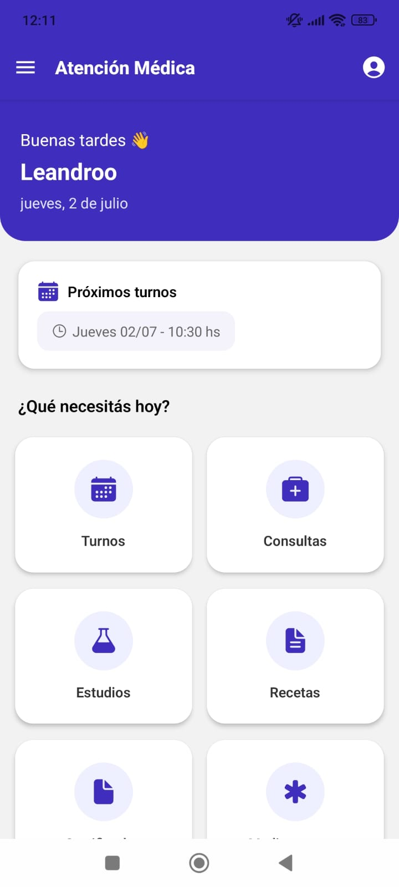

Turnos
Consultá fechas, horarios y próximas visitas médicas desde el celular.
App médica para pacientes
Todo lo que necesitás para gestionar tu salud, en un solo lugar: turnos, consultas, estudios, recetas, certificados y medicamentos.

Gestión simple
Consultá fechas, horarios y próximas visitas médicas desde el celular.
Accedé a información relevante y canales de atención con claridad.
Mantené tus estudios y resultados disponibles cuando los necesites.
Centralizá recetas y documentos médicos en una experiencia ordenada.
Encontrá certificados rápidamente, sin perder tiempo buscando papeles.
Tené a mano el seguimiento de medicamentos y tratamientos indicados.
Seguridad y privacidad
AIP está pensada para ofrecer acceso rápido y ordenado a datos de salud, con una interfaz clara, controles simples y un enfoque profesional para acompañarte en cada gestión.